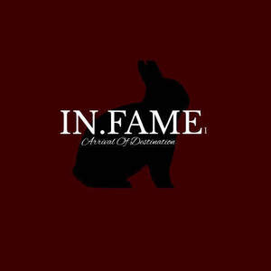

Trade Mark Journal No.2026/003 16 January 2026
UK00004317029 29 December 2025 (25,35)

- Class 25
- Clothing; Jackets [clothing]; Knitwear [clothing]; Ready-to-wear clothing; Woolen clothing; Furs [clothing]; Clothing layettes; Garments for protecting clothing; Layettes [clothing]; Linen clothing; Headbands [clothing]; Headbands for clothing; Gloves [clothing]; Gloves as clothing; Clothes; Aprons [clothing]; Maternity clothing; Kerchiefs [clothing]; Jerseys [clothing]; Denims [clothing]; Shorts [clothing]; Cashmere clothing; Capes (clothing); Oilskins [clothing]; Gabardines [clothing]; Silk clothing; Leather clothing; Clothing of leather; Leather (Clothing of -); Collars [clothing]; Parts of clothing, footwear and headgear; Veils [clothing]; Knitted clothing; Hoods [clothing]; Windproof clothing; Embroidered clothing; Corsets [clothing, foundation garments]; Wristbands [clothing]; Bandeaux [clothing]; Belts [clothing]; Belts for clothing; Rainproof clothing; Waterproof clothing; Casual clothing; Visors [clothing]; Jackets being sports clothing; Jackets (Stuff -) [clothing]; Stuff jackets [clothing]; Playsuits [clothing]; Bottoms [clothing]; Clothing for leisure wear; Ready-made clothing; Latex clothing; Trunks being clothing; Woven clothing; Infant clothing; Leisure clothing; Clothing for sports; Sports clothing; Drawers [clothing]; Drawers as clothing; Ties [clothing]; Athletic clothing; Clothing for children; Muffs [clothing]; Clothing for babies; Bodies [clothing]; Tops [clothing]; Clothing for infants; Clothing for cycling; Fabric belts [clothing]; Weatherproof clothing; Pockets for clothing; Water-resistant clothing; Triathlon clothing; Handwarmers [clothing]; Beach clothing; Clothing for skiing; Thermal clothing; Chaps (clothing); Cowls [clothing]; Men's clothing; Fishing clothing; Dance clothing; Mitts [clothing]; Braces for clothing; Footwear; Sneakers [footwear]; Wooden shoes [footwear]; Footwear [excluding orthopedic footwear]; Golf clothing, other than gloves; Boas [clothing]; Gloves for apparel; Flip-flops for use as footwear; Insoles for footwear; Leather belts [clothing]; Jogging bottoms [clothing]; Clothing for cyclists.
- Class 35
- Retail services connected with the sale of clothing and clothing accessories; Retail services in relation to clothing accessories; Retail services relating to clothing; Retail services in relation to clothing; Retail store services in the field of clothing; Online retail store services relating to clothing; Online retail services relating to clothing; Online retail store services in relation to clothing; Online retail services for downloadable virtual clothing; Online retail services in relation to downloadable virtual clothing; Online retail services relating to jewelry; Online retail services relating to handbags; Online retail services in relation to downloadable virtual handbags; Online retail services in relation to downloadable virtual footwear; Online retail services relating to toys; Online retail services in relation to downloadable virtual headwear; Advertising the goods and services of online vendors via a searchable online guide; Providing a searchable online advertising guide featuring the goods and services of online vendors; Online retail services relating to cosmetics; Retail services in relation to downloadable virtual clothing; Providing a searchable online advertising guide featuring the goods and services of other on-line vendors on the internet; Mail order retail services for clothing accessories; Providing online marketplaces for sellers of goods and or services; Online advertising; Arranging business introductions relating to the buying and selling of products; Promoting the sale of fashion goods through promotional articles in magazines; Online retail store services relating to cosmetic and beauty products; Online marketing; Online retail services relating to luggage; Mail order retail services connected with clothing accessories; Trade marketing [other than selling]; Mail order retail services for clothing; Provision of an online marketplace for buyers and sellers of goods and services; Online retail services for downloadable digital music; Online retail services in relation to downloadable virtual works of art; Wholesale services relating to clothing; Online advertising services; Arranging of contracts for others for the buying and selling of goods; Wholesale services in relation to clothing; Online advertisements; Retail services in relation to downloadable virtual handbags; Telephone marketing services [not selling]; Provision of an on-line marketplace for buyers and sellers of goods and services; Online ordering services; Advertising services relating to clothing; Retail services in relation to downloadable virtual footwear; Arranging commercial transactions, for others, via online shops; Online retail services for downloadable and pre-recorded music and movies; On-line advertising; Providing searchable online advertising guides; Retail services in relation to downloadable virtual headwear; Promoting the sale of goods and services of others through the distribution of printed material and promotional contests; Retail services connected with the sale of furniture; Retail services in relation to fashion accessories; Online retail services for downloadable ring tones; Online business networking services; Media buying services; Providing on-line auction services; Retail services relating to fake furs; On-line advertising and marketing services; Advertising automobiles for sale by means of the Internet; Retail services relating to jewelry; Provision of an online marketplace for buyers and sellers of downloadable digital image files authenticated by non-fungible tokens [NFTs]; Advertising services relating to the sale of goods; Retail services connected with the sale of subscription boxes containing cosmetics; On-line trading services in which seller posts products to be auctioned and bidding is done via the Internet; Wholesale services relating to jewelry; Advertising services to promote the sale of beverages; Procuring of contracts for the purchase and sale of goods; Unmanned retail store services relating to food; Preparation of mailing lists for direct mail advertising services [other than selling]; Promoting the music of others by means of providing online portfolios via a website; Mail order retail services for cosmetics; Promoting the artwork of others by means of providing online portfolios via a website; Provision of online marketplaces for buyers and sellers of goods and services which are authenticated by non-fungible tokens; Marketing the goods and services of others by distributing coupons; Purchasing of goods and services for other businesses; Arranging of contracts for the purchase and sale of goods and services, for others; Arranging the buying of goods for others; Wholesale services in relation to baked goods; Procurement of contracts for the purchase and sale of goods and services for others; Retail services in relation to baked goods; Procurement of contracts for the purchase and sale of goods and services; Promoting the sale of goods and services of others through promotional events; Promoting the goods and services of others through the distribution of discount cards; Wholesale services relating to sporting goods; Marketing the goods and services of others; Market analysis services relating to the sale of goods; Retail services relating to sporting goods; Promoting the goods and services of others by distributing coupons; Procurement services for others [purchasing goods and services for other businesses]; Promoting the goods and services of others through advertisements on Internet websites; Promoting the goods and services of others over the Internet; Alcoholic beverage procurement services for others [purchasing goods for other businesses]; Promoting the sale of goods and services of others by awarding purchase points for credit card use; Promoting the goods and services of others by arranging for sponsors to affiliate their goods and services with sporting activities; Negotiation of contracts relating to the purchase and sale of goods; Promoting the goods and services of others by arranging for sponsors to affiliate their goods and services with sports competitions; Presentation of companies and their goods and services on the Internet; Goods or services price quotations; Promoting the goods and services of others through the administration of sales and promotional incentive schemes involving trading stamps; Promoting the goods and services of others; Promoting the goods and services of others through infomercials; Advertising of the goods of other vendors, enabling customers to conveniently view and compare the goods of those vendors; Advertising particularly services for the promotion of goods; Provision of space on websites for advertising goods and services; Promoting the goods and services of others through discount card programs; Mail order retail services related to foodstuffs; Retail services via catalogues related to foodstuffs; Arranging of buying and selling contracts for third parties; Wholesale services relating to fake furs; Demonstration of goods and services by electronic means, also for the benefit of the so-called teleshopping and homeshopping services; Procurement of contracts for others relating to the sale of goods; Promotion of goods and services for others; Promoting the goods and services of others by arranging for sponsors to affiliate their goods and services with awards programs; Mediation of contracts for purchase and sale of products; Retail services relating to bakery products; Mediation of agreements regarding the sale and purchase of goods; Retail services connected with the sale of subscription boxes containing food; Advisory services relating to the purchase of goods on behalf of business; Retail services in relation to bakery products; Purchasing services; On-line auctioneering services via the Internet; Providing consumer information relating to goods and services; Promoting the goods and services of others via a global computer network.
IN.FAME 1 LIMITED